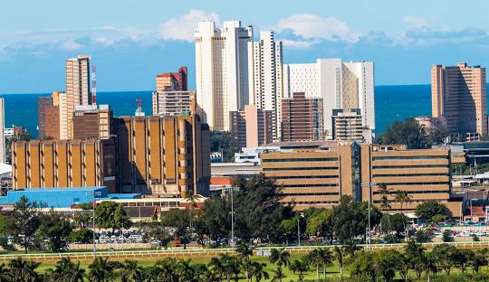

Important Cities or Regions
Johannesburg: The Economic Hub
Johannesburg, often referred to as the "City of Gold," is South Africa's largest city and a major economic powerhouse. Known for its vibrant culture and bustling urban life, Johannesburg is a melting pot of diverse communities and serves as the financial heart of the country.

Cape Town: Where Beauty Meets History
Cape Town, nestled between the iconic Table Mountain and the stunning Atlantic Ocean, is renowned for its breathtaking landscapes and rich history. The city blends modernity with a deep sense of heritage, offering visitors a unique experience that includes historical landmarks and a vibrant arts scene.

Durban: A Coastal Gem Durban
located along the warm Indian Ocean, is a coastal gem known for its golden beaches and diverse cultural influences. The city's multicultural atmosphere is reflected in its delicious cuisine, lively markets, and annual festivals.
Demographics
Population Diversity: A Tapestry of Cultures
South Africa's population is a mosaic of diverse ethnic, religious, and language groups. With a population that reflects its historical and cultural complexity, the country is home to various communities, including the Zulu, Xhosa, Afrikaans-speaking, and English-speaking populations.
Ethnic Groups: A Rich Blend
South Africa's ethnic diversity is a testament to its history. The Zulu, the largest ethnic group, coexists with the Xhosa, Afrikaans, and various other groups, contributing to the nation's vibrant cultural tapestry.
Religious Harmony: Coexistence and Diversity
Religious freedom is a cornerstone of South African society. The country embraces a range of religions, including Christianity, Islam, Hinduism, and traditional African beliefs, fostering a spirit of tolerance and coexistence.
Language Groups: A Multilingual Nation
South Africa is a multilingual country with 11 official languages. From isiZulu to Afrikaans and English, linguistic diversity is a source of pride, reflecting the nation's commitment to inclusivity.
Climate
Diverse Climate Zones
South Africa boasts a diverse climate due to its varied topography. From the arid landscapes of the Karoo to the lush coastal regions, the country experiences a range of climates, including Mediterranean, subtropical, and desert climates.
Distinct Seasons
South Africa has four distinct seasons. Summers are warm and inviting, while winters can be cool, especially in the interior regions. Coastal areas enjoy milder temperatures throughout the year, making them popular destinations for locals and tourists alike.
Temperature Extremes
The temperature extremes vary across the country. While coastal areas experience more moderate temperatures, inland regions can see hotter summers and colder winters, providing a climate for every preference.
Famous Landmarks/Sites
Table Mountain: A Natural Wonder
Table Mountain, overlooking Cape Town, is one of South Africa's most iconic landmarks. Its flat-topped peak offers breathtaking panoramic views of the city and the surrounding ocean, attracting hikers, nature enthusiasts, and photographers.

Kruger National Park: Wildlife Extravaganza
Kruger National Park, one of Africa's largest game reserves, is a haven for wildlife enthusiasts. Home to the "Big Five" (lion, elephant, buffalo, leopard, and rhinoceros), the park offers an unparalleled safari experience, allowing visitors to witness the beauty of South Africa's diverse fauna.

Robben Island: A Symbol of Resilience
Robben Island, located off the coast of Cape Town, holds historical significance as the site where Nelson Mandela and other political prisoners were incarcerated during the apartheid era. The island has become a symbol of South Africa's journey to democracy and freedom.

These landmarks and regions collectively contribute to South Africa's allure, offering a glimpse into its vibrant cities, diverse demographics, climatic variations, and historical significance.